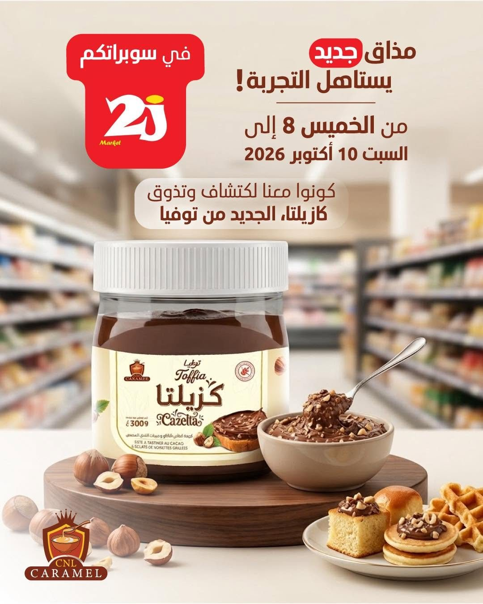

Le caramel algérien, fait avec passion depuis 2011.
Crème caramel, crèmes de pistache et de noisette, beurre de cacahuètes, pâte à tartiner Cazelta : la gamme Toffia est fabriquée à Blida pour les pâtissiers, les distributeurs et les familles.
توفيا… زيد بنّة على البنّة

Trois familles, un même goût du travail bien fait.
Des crèmes prêtes à l'emploi pour la pâtisserie, des pâtes à tartiner pour le petit-déjeuner et une confiserie au caramel mou.


Les produits Toffia

du caramel
Une fabrication industrielle, un goût de pâtisserie.
CNL Caramel produit à Blida des crèmes et des garnitures prêtes à l'emploi. L'objectif : donner aux pâtissiers comme aux familles un résultat régulier, gourmand, sans les contraintes de la cuisson du sucre.

Cazelta arrive en supermarché.
La nouvelle pâte à tartiner Toffia, au cacao et aux éclats de noisettes grillées, a été présentée en dégustation dans les supermarchés 2J. Un pot de 300 g, pour les tartines, les croissants et les gaufres.
Voir CazeltaÀ la rencontre de nos clients
Foires, salons professionnels, Kids Expo : l'équipe Toffia fait goûter ses crèmes partout en Algérie.


Pâtissier, boulanger, grossiste ?
Recevez nos conditions professionnelles et la liste des formats disponibles. Réponse sous 24 h.